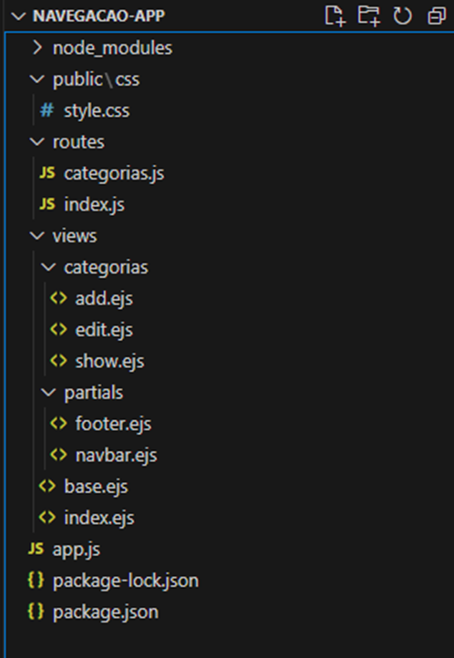

No VS Code inicialize um novo projeto (pasta vazia, chamada "navegacao-app")
Neste projeto, abra o terminal e instale as seguintes dependências
npm install express ejs npm install --save-dev nodemonO Express é um framework minimalista para Node.js que facilita a construção de aplicativos web e APIs. Ele fornece um conjunto robusto de recursos para criar servidores HTTP e gerenciar rotas, middleware, entre outros. O Express simplifica o processo de criar e configurar um servidor Node.js e é amplamente utilizado devido à sua flexibilidade e facilidade de uso.
O EJS é um motor de visualização para Node.js que permite gerar HTML com JavaScript embutido. Com o EJS, você pode criar páginas dinâmicas e reutilizar componentes de interface, como cabeçalhos e rodapés, sem duplicar o código.
O Nodemon é uma ferramenta que ajuda no desenvolvimento de aplicativos Node.js reiniciando automaticamente o servidor quando mudanças são detectadas no código-fonte. É extremamente útil para desenvolvimento, pois elimina a necessidade de parar e reiniciar manualmente o servidor toda vez que uma modificação é feita.
Crie a seguinte estrutura de pastas e arquivos:
